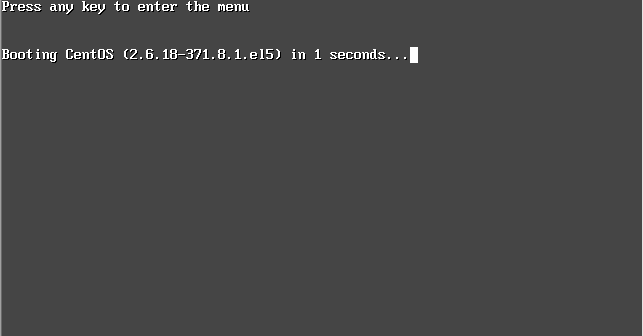
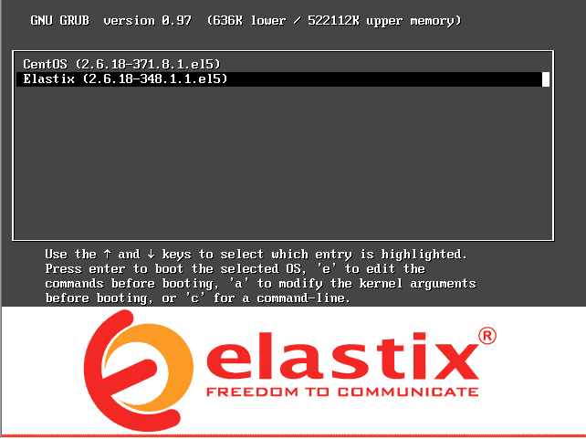
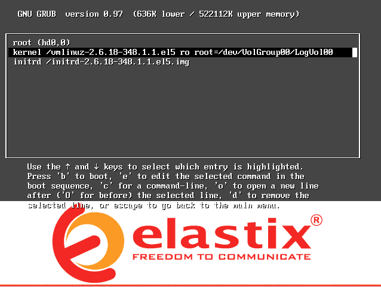
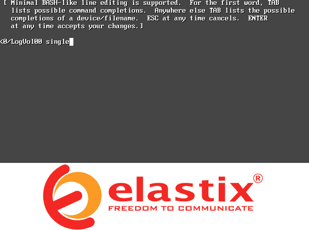
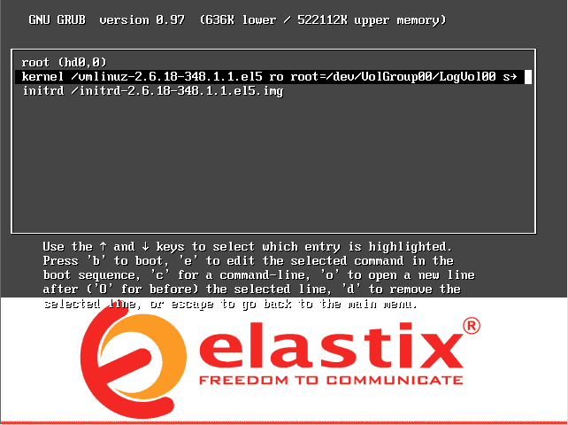
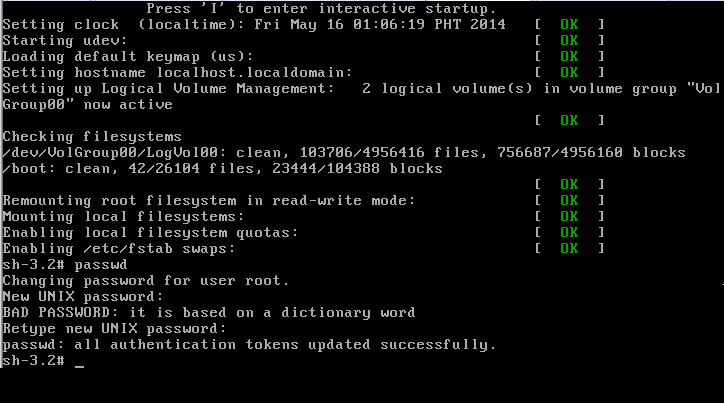

1. Boot the system and press any key after you see the "Press any key to enter the menu" message. This will take you to the GRUD menu.

2. Press "e" to edit the boot commands before booting.

3. Select and highlight the item with vmlinuz using the arrow keys and press "e" to edit the line.

4. At the end of the line press space bar and type "single".

5. Press enter. This will bring you back to GRUD menu.

6. If vmlinuz is not selected or highlighted, select it using the arrow key. Now press "b" to boot the system and wait for the bash shell.
7. Execute the password reset command by typing "passwd" and press Enter. Now type your new password at the command prompt.

8. Type "reboot" to reboot the system.